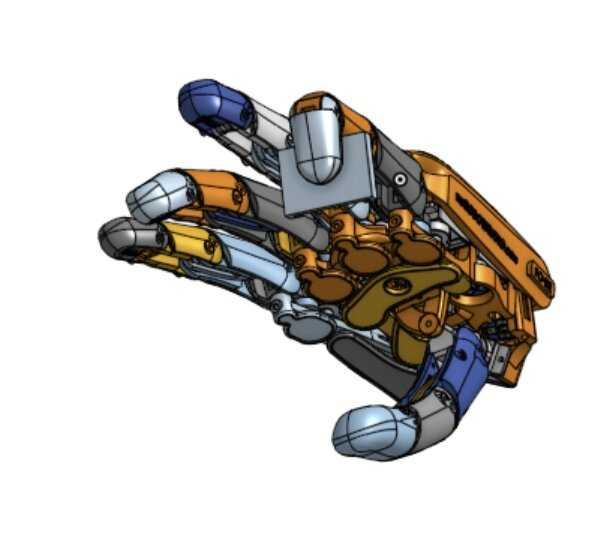

Overview
HAND-ERC is a Northwestern research center focused on the future of Robotic Hands. As part of the Summer Undergraduate Research Grand, which provided $4000 of funding, I helped lead the development of novel tactile sensors that rely on piezoelectric transducers and ultrasonic wave reading, through testbed development and designing new parts to integrate these sensors into hands.
As part of my project, I designed, programmed, and wired a modular testbed to test a new architecture of tactile sensors. I worked with Postdoctoral researchers on this project, collaborating on the design of the testbed and the calibration of the sensors, resulting in new insights into the performance of these sensors.
Continue to read more about our design process:

Hand model + Finger-sensor integration I made